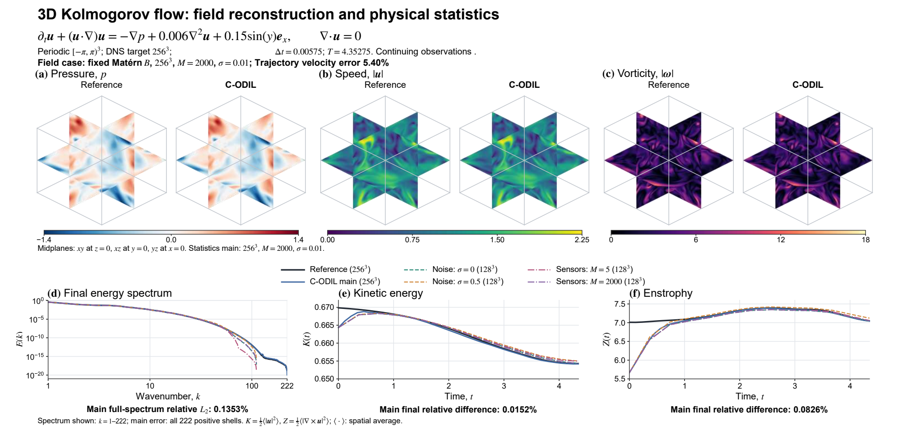

C-ODIL: turbulent flow reconstruction
Research collaboration with Johns Hopkins University and the University of Michigan
Research question. Sparse measurements rarely capture a complete turbulent flow. I investigate how governing equations and noisy observations can be combined to reconstruct its evolving state efficiently.
My contribution. I designed and implemented the C-ODIL framework and carried out its theoretical and numerical validation. The method reorganizes the solution around time evolution, alternating physics-based forecasts with observation corrections instead of optimizing an entire space–time trajectory at once.
Results and ongoing work. Validation spans Kuramoto–Sivashinsky, Burgers and three-dimensional Kolmogorov flows, including a 2563 reconstruction. Extensions investigate lightweight neural modules for missing information and Bayesian prior specifications for reconstruction and uncertainty quantification.

Papers & poster
- In preparation
Efficient Reconstruction of Turbulent Flows from Sparse and Noisy Observations via Optimizing a Discrete Loss
Lin, Z., et al.
- In preparation
Bayesian C-ODIL for Uncertainty Quantification in Flow Reconstruction
Shao, X., Lin, Z., et al.
Method & benchmark details
A causal approach to reconstruction
C-ODIL advances discrete governing equations through sequential forecasts and observation corrections. The same discrete physics formulation supports forward simulation and inverse reconstruction from sparse measurements.
The poster includes tests on Kuramoto–Sivashinsky, Burgers and three-dimensional Navier–Stokes equations, together with neural-network-assisted identification of a hidden PDE term.
The 3D example shown above
The field reconstruction uses a 2563 periodic Kolmogorov-flow reference, 2,000 observations and noise level σ = 0.01. This specific poster case uses a fixed Matérn background covariance and reports a trajectory velocity error of 5.40%. The full poster gives the settings, comparisons and sensitivity studies.
Advisors: Dr. Shuolin Xiao (Johns Hopkins University) and Dr. Yifan Du (University of Michigan)